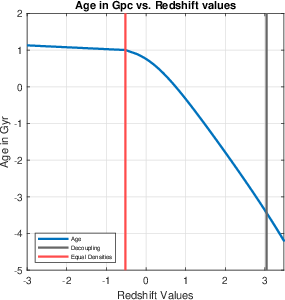

Reformulated the Friedmann and cosmic acceleration equations into a redshift dependent numerical model to estimate the age and scale of the observable universe.
Instead of calling an existing astronomy library, I started from the Friedmann and cosmic acceleration equations and reformulated them in terms of redshift, since that's what is actually observed, rather than the theoretical scale factor, to build a numerical model of cosmic expansion from first principles.
Numerically integrating that model across a large redshift range let me estimate the age of the universe and the relationship between redshift and cosmological distance, then check the results against expected physical behavior.
